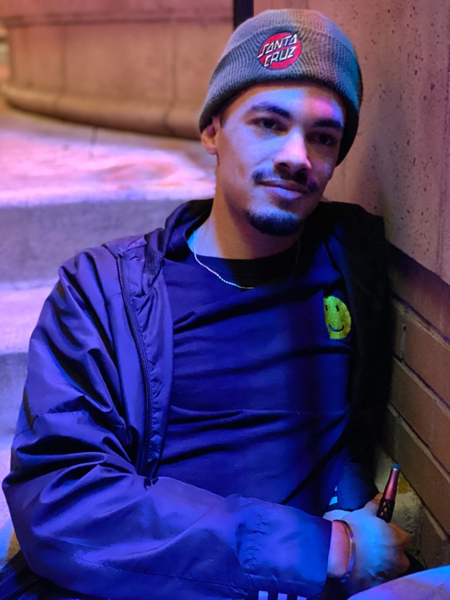

What to Wear for Senior Pictures
Outfit planning for Holland & West Michigan senior sessions

"What should I wear for senior pictures?" comes up on every first call. It depends on location, personality, and how many looks you want. Solid colors and outfits that feel like you make a difference.
How many outfits?
Plan 2-4 complete looks for a typical 60-90 minute session:
- Dressy: formal dress, suit, or dressier casual for announcements
- Everyday: jeans, favorite tee, flannel, or streetwear you wear
- Story: jersey, instrument, art, job uniform, or hobby gear
- Optional: cap & gown, prom dress, or seasonal coat for Michigan fall
Colors that work on Lake Michigan beaches
- Jewel tones, navy, emerald, burgundy, mustard
- Neutrals, cream, tan, soft white (skip pure bright white in direct sun)
- Denim layers for timeless senior picture style
- Rust, terracotta, and dusty rose for sunset sessions
Avoid neon, tiny busy prints, and large logos across the chest. They pull attention from your face and date quickly.
Downtown Holland & urban sessions
Brick and murals already add texture. Solid layers, leather jackets, monochromatic fits, and one pop color (beanie, shoes) photograph well at night or golden hour. Keep the focus on you, not the background.
Fit & grooming
- Steam or iron wrinkles; hang outfits the night before
- Trim nails; subtle makeup often photographs better than heavy flash-ready makeup outdoors
- Bring lint roller and oil-blot sheets
- Second pair of shoes if beach rocks or sand are involved
What to skip
- Brand-new uncomfortable shoes you haven't walked in
- Matching identical outfits with friends (coordinate colors instead)
- Sunglasses for every shot. You'll want eyes visible for yearbook and parents.
Still deciding? Send a message with your chosen location and we'll suggest palettes before your Holland senior session.